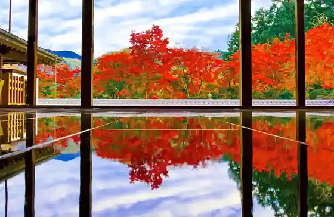
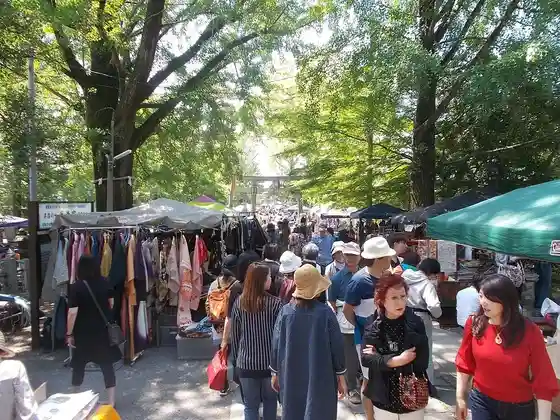
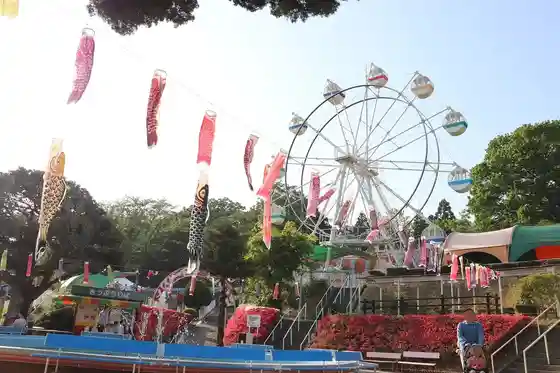
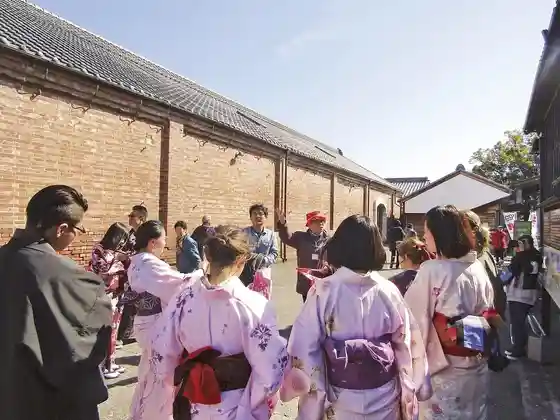

Hotoku Tera
Kiryu, Gunma · 0277-65-9165 · Official / source link

Kiryu Sandai City
Kiryu, Gunma · 0277-46-1111 · Official / source link

Asugaa Kiryu Ga Oka Amusement Park
Kiryu, Gunma · 0277-22-7580 · Official / source link

Kiryu Shin Town Juyo Dentoteki Kenzobutsu Gun Hozon Chiku
Kiryu, Gunma · 0277-46-1111 · Official / source link

Himokawa
Kiryu, Gunma · 0277-46-1111 · Official / source link
Ai Workshop Shoda
Kiryu, Gunma · 0277-44-5797 · Official / source link
Asakura Somenuno (Kabu)
Kiryu, Gunma · 0277-44-3176 · Official / source link
Izumi Orimono (Ari)
Kiryu, Gunma · 0277-45-2449 · Official / source link
Izuhara Sangyo (Kabu)
Kiryu, Gunma · 0277-52-8787 · Official / source link
Iwa Shu Orimono
Kiryu, Gunma · 0277-44-4949 · Official / source link
USUI AKIKO GALLERY
Kiryu, Gunma · 080-3311-1262 · Official / source link
com+position
Kiryu, Gunma · 0277-46-8663 · Official / source link
(Ari) Gezan Seisakusho Mo no Zukuri Workshop shimo
Kiryu, Gunma · 0277-40-1377 · Official / source link
Tennen Senshoku Kenkyusho
Kiryu, Gunma · 0277-43-1089 · Official / source link
(Ari) Nakazato Shoten Kiryu Udon Village
Kiryu, Gunma · 0277-65-9030 · Official / source link
INOJIN
Kiryu, Gunma · 0277-46-1251 · Official / source link
Kinu Yu Juku Workshop Kazabana
Kiryu, Gunma · 0277-32-6387 · Official / source link
Hoshi Tei Tourist Farm
Kiryu, Gunma · Official / source link
Kiryu Raku City
Kiryu, Gunma · 0277-46-1111 · Official / source link
Kawano Ya Branch
Kiryu, Gunma · Official / source link
Bekariikaferenga Koi Kawara (Renga)
Kiryu, Gunma · 0277-32-5553 · Official / source link
Fujiya Main Shop
Kiryu, Gunma · 0277-44-3791 · Official / source link
Tonkatsuhoshi no
Kiryu, Gunma · 0277-45-2674 · Official / source link
Teuchi Chi Ramen
Kiryu, Gunma · 0277-44-3813 · Official / source link
Yano Sono
Kiryu, Gunma · 0277-45-2925 · Official / source link
Izumi Shin
Kiryu, Gunma · 0277-22-2234 · Official / source link
Pizzeria Antimo
Kiryu, Gunma · 0277-32-3658 · Official / source link
Chukaryori Banri
Kiryu, Gunma · 0277-22-9057 · Official / source link
Miki Ninju Tsukasa
Kiryu, Gunma · 0277-44-5921 · Official / source link
Torattoria Barubon
Kiryu, Gunma · 0277-46-0508 · Official / source link
Unagi Akamatsu
Kiryu, Gunma · 0277-44-8398 · Official / source link
Kissa Gasu Tomoshibi
Kiryu, Gunma · 0277-20-8141 · Official / source link
Kappo Ippu Bi
Kiryu, Gunma · 0277-44-3537 · Official / source link
Tofuto Kyofu Yuba Ryori Wakamiya
Kiryu, Gunma · 0277-43-0578 · Official / source link
Shokora no A
Kiryu, Gunma · 0277-44-5553 · Official / source link
DAY'S dining
Kiryu, Gunma · 0277-46-8988 · Official / source link
A la table
Kiryu, Gunma · 0277-32-5776 · Official / source link
Gomi Hachi Chin
Kiryu, Gunma · 0277-22-5381 · Official / source link
Kimi Kyu Main Shop
Kiryu, Gunma · 0277-43-4477 · Official / source link
Fujiya Shokudo
Kiryu, Gunma · 0277-45-1805 · Official / source link
Kaferesutoran Kanransha
Kiryu, Gunma · 0277-47-3613 · Official / source link
Maru Gen
Kiryu, Gunma · 0277-43-5888 · Official / source link
Takemasa Kome Mise
Kiryu, Gunma · 0277-44-7919 · Official / source link
Tanuma Ya
Kiryu, Gunma · 0277-44-9177 · Official / source link
Pi no Kio Kohii Mise
Kiryu, Gunma · 0277-44-6566 · Official / source link
Otokogi Ramen Akagi
Kiryu, Gunma · Official / source link
Miyajima Iori Nishiki Town Mise
Kiryu, Gunma · 0277-44-3515 · Official / source link
Teuchi Chiudonsoba
Kiryu, Gunma · 0277-44-5780 · Official / source link
Joshu Gyuniku Mihara
Kiryu, Gunma · 0277-47-4374 · Official / source link
Ofu Ryori Shiefu Hayakawa
Kiryu, Gunma · 0277-22-3363 · Official / source link
Suteki Hambagu Donsan Tei Shinjukuten
Kiryu, Gunma · 0277-22-4129 · Official / source link
Nihonryori
Kiryu, Gunma · 0277-54-1335 · Official / source link
Midori Ya
Kiryu, Gunma · 070-4026-8086 · Official / source link
Tagajo
Kiryu, Gunma · 0277-74-0811 · Official / source link
Soba Kura Momotaro
Kiryu, Gunma · 0277-22-4247 · Official / source link
Ikoku Cho Na Basho
Kiryu, Gunma · 0277-22-3237 · Official / source link
Otora Shokudo
Kiryu, Gunma · 0277-44-6528 · Official / source link
Chugokuryori Ryu En
Kiryu, Gunma · 0277-45-2069 · Official / source link
Azuma Park (Churippu)
Kiryu, Gunma · 0277-22-8636 · Official / source link
Yamagami Castle Ruins Park
Kiryu, Gunma · 0277-74-5101 · Official / source link
Kiryu Minami Park
Kiryu, Gunma · 0277-52-3456 · Official / source link
Narita Yama Akagi Tera (Shakunage)
Kiryu, Gunma · 0277-74-1695 · Official / source link
Niisato no Sakuraso Gunraku
Kiryu, Gunma · 0277-74-2217 · Official / source link
Ryu Makoto Tera (Botan)
Kiryu, Gunma · 0277-74-2251 · Official / source link
Azuma Park (Hana Shobu)
Kiryu, Gunma · 0277-22-8636 · Official / source link
Hanamigahara Forest Park
Kiryu, Gunma · 0277-96-2113 · Official / source link
Shimizu Tsutsuji Kaido
Kiryu, Gunma · 0277-96-2113 · Official / source link
Rihei Chaya Forest Park
Kiryu, Gunma · 0277-96-2113 · Official / source link
Yamagami Castle Ruins Park (Ajisai)
Kiryu, Gunma · 0277-74-5101 · Official / source link
Sakuraso Fureai Park
Kiryu, Gunma · 0277-74-2217 · Official / source link
Tenmangu Shrine Ko Mingu Kotto City
Kiryu, Gunma · 0277-46-1111 · Official / source link
Bai Ba Saya City
Kiryu, Gunma · 080-2488-6359 · Official / source link
Kiryu Karakuri Ningyo Shibai no Joen
Kiryu, Gunma · 0277-46-1111 · Official / source link
Eki no Tennen Onsen Mizunuma Baths
Kiryu, Gunma · 0277-46-9071 · Official / source link
Okawa Art Museum
Kiryu, Gunma · 0277-46-3300 · Official / source link
Roadside Station
Kiryu, Gunma · 0277-96-2575 · Official / source link
Orimono Sanko Kan ” Murasaki ” (Yukari)
Kiryu, Gunma · 0277-45-3111 · Official / source link
Umeda Mizumi
Kiryu, Gunma · 0277-32-1290 · Official / source link
Iso Kiri Soba
Kiryu, Gunma · 0277-44-5418 · Official / source link
Kiryu Meiji Kan
Kiryu, Gunma · 0277-52-3445 · Official / source link
“ Orimono no Machi Kiryu ” Wo Taikan Shiyo !
Kiryu, Gunma · 0277-46-1111 · Official / source link
Kaibaterasu
Kiryu, Gunma · 0277-46-6550 · Official / source link
Kiryu Kankojoho Center Shirukuru Kiryu
Kiryu, Gunma · 0277-32-4555 · Official / source link